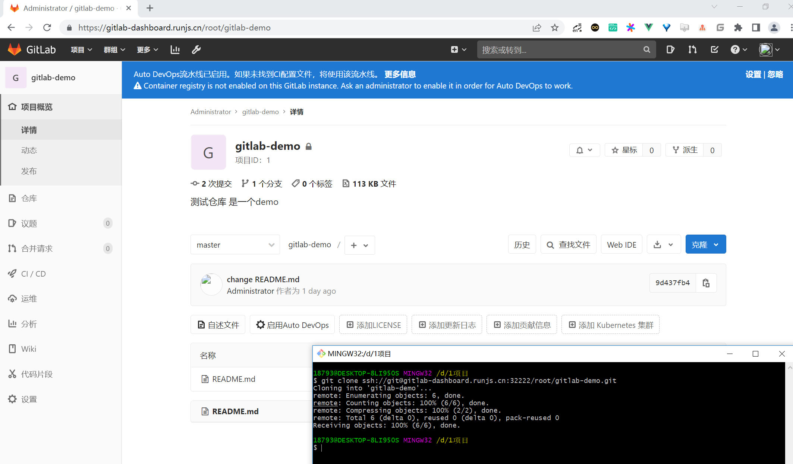

<!DOCTYPE html>
<html class="writer-html5" lang="en" >
<head>
  <meta charset="utf-8" /><meta name="generator" content="Docutils 0.17: http://docutils.sourceforge.net/" />

  <meta name="viewport" content="width=device-width, initial-scale=1.0" />
  <title>Gitlab &mdash; 运维开发修炼之路</title>
      <link rel="stylesheet" href="../../_static/pygments.css" type="text/css" />
      <link rel="stylesheet" href="../../_static/css/theme.css" type="text/css" />
  <!--[if lt IE 9]>
    <script src="../../_static/js/html5shiv.min.js"></script>
  <![endif]-->
  
        <script data-url_root="../../" id="documentation_options" src="../../_static/documentation_options.js"></script>
        <script src="../../_static/jquery.js"></script>
        <script src="../../_static/underscore.js"></script>
        <script src="../../_static/doctools.js"></script>
    <script src="../../_static/js/theme.js"></script>
    <link rel="index" title="Index" href="../../genindex.html" />
    <link rel="search" title="Search" href="../../search.html" />
    <link rel="next" title="Harbor" href="3.Harbor.html" />
    <link rel="prev" title="Jenkins" href="1.Jenkins.html" /> 
</head>

<body class="wy-body-for-nav"> 
  <div class="wy-grid-for-nav">
    <nav data-toggle="wy-nav-shift" class="wy-nav-side">
      <div class="wy-side-scroll">
        <div class="wy-side-nav-search" >
            <a href="../../index.html" class="icon icon-home"> 小健_Docker_K8s_Blog
            
          </a>
              <div class="version">
                1.0
              </div>
<div role="search">
  <form id="rtd-search-form" class="wy-form" action="../../search.html" method="get">
    <input type="text" name="q" placeholder="Search docs" />
    <input type="hidden" name="check_keywords" value="yes" />
    <input type="hidden" name="area" value="default" />
  </form>
</div>
        </div><div class="wy-menu wy-menu-vertical" data-spy="affix" role="navigation" aria-label="Navigation menu">
              <ul class="current">
<li class="toctree-l1"><a class="reference internal" href="../../01.Docker%E6%8A%80%E6%9C%AF%E5%85%A5%E9%97%A8%E4%B8%8E%E5%AE%9E%E6%88%983%E7%89%88/index.html">01.Docker技术入门与实战3版</a></li>
<li class="toctree-l1"><a class="reference internal" href="../../02.Kubernetes%E5%AE%9E%E6%88%98%E6%8C%87%E5%8D%97/index.html">02.Kubernetes实战指南</a></li>
<li class="toctree-l1"><a class="reference internal" href="../../03.Docker%E7%BB%8F%E5%85%B8%E5%AE%9E%E4%BE%8B/index.html">03.Docker经典实例</a></li>
<li class="toctree-l1"><a class="reference internal" href="../../04.Prometheus%E7%9B%91%E6%8E%A7%E8%BF%90%E7%BB%B4%E5%AE%9E%E6%88%98/index.html">04.Prometheus监控运维实战</a></li>
<li class="toctree-l1 current"><a class="reference internal" href="../index.html">05.Kubernetes入门到实践</a><ul class="current">
<li class="toctree-l2"><a class="reference internal" href="../1.%E5%AE%B9%E5%99%A8%E7%9A%84%E5%8F%91%E5%B1%95%E5%8F%B2/index.html">1.容器的发展史</a></li>
<li class="toctree-l2"><a class="reference internal" href="../2.Kubernetes%E7%9A%84%E6%A0%B8%E5%BF%83%E6%A6%82%E5%BF%B5/index.html">2.Kubernetes的核心概念</a></li>
<li class="toctree-l2"><a class="reference internal" href="../3.Kubernetes%E7%9A%84%E5%AE%89%E8%A3%85%E5%92%8C%E9%83%A8%E7%BD%B2/index.html">3.Kubernetes的安装和部署</a></li>
<li class="toctree-l2"><a class="reference internal" href="../4.Pod/index.html">4.Pod的基本操作</a></li>
<li class="toctree-l2"><a class="reference internal" href="../5.%E6%8E%A7%E5%88%B6%E5%99%A8/index.html">5.控制器</a></li>
<li class="toctree-l2"><a class="reference internal" href="../6.Service%E5%92%8CIngress/index.html">6.Service和Ingress</a></li>
<li class="toctree-l2"><a class="reference internal" href="../7.%E5%AD%98%E5%82%A8%E4%B8%8E%E9%85%8D%E7%BD%AE/index.html">7.存储与配置</a></li>
<li class="toctree-l2"><a class="reference internal" href="../8.Kubernetes%E8%B5%84%E6%BA%90%E7%9A%84%E7%AE%A1%E7%90%86%E5%8F%8A%E8%B0%83%E5%BA%A6/index.html">8.Kubernetes资源的管理及调度</a></li>
<li class="toctree-l2"><a class="reference internal" href="../9.API-Server/index.html">9.API-Server</a></li>
<li class="toctree-l2"><a class="reference internal" href="../10.Kubernetes%E7%9A%84%E6%89%A9%E5%B1%95/index.html">10.Kubernetes的扩展</a></li>
<li class="toctree-l2"><a class="reference internal" href="../11.%E9%A1%B9%E7%9B%AE%E9%83%A8%E7%BD%B2%E6%A1%88%E4%BE%8B/index.html">11.项目部署案例</a></li>
<li class="toctree-l2"><a class="reference internal" href="../12.Helm%E5%AD%A6%E4%B9%A0%E6%8C%87%E5%8D%97/index.html">12.Helm学习指南</a></li>
<li class="toctree-l2 current"><a class="reference internal" href="index.html">13.Kubernetes-DevOps</a><ul class="current">
<li class="toctree-l3"><a class="reference internal" href="1.Jenkins.html">Jenkins</a></li>
<li class="toctree-l3 current"><a class="current reference internal" href="#">Gitlab</a><ul>
<li class="toctree-l4"><a class="reference internal" href="#id1">1.部署</a></li>
<li class="toctree-l4"><a class="reference internal" href="#id2">2.使用</a></li>
<li class="toctree-l4"><a class="reference internal" href="#id3">3.参考文献</a></li>
</ul>
</li>
<li class="toctree-l3"><a class="reference internal" href="3.Harbor.html">Harbor</a></li>
<li class="toctree-l3"><a class="reference internal" href="4.Tekton.html">Tekton</a></li>
<li class="toctree-l3"><a class="reference internal" href="5.k9s%E9%9B%86%E7%BE%A4%E7%AE%A1%E7%90%86%E5%B7%A5%E5%85%B7.html">k9s集群管理工具</a></li>
</ul>
</li>
</ul>
</li>
</ul>

        </div>
      </div>
    </nav>

    <section data-toggle="wy-nav-shift" class="wy-nav-content-wrap"><nav class="wy-nav-top" aria-label="Mobile navigation menu" >
          <i data-toggle="wy-nav-top" class="fa fa-bars"></i>
          <a href="../../index.html">小健_Docker_K8s_Blog</a>
      </nav>

      <div class="wy-nav-content">
        <div class="rst-content">
          <div role="navigation" aria-label="Page navigation">
  <ul class="wy-breadcrumbs">
      <li><a href="../../index.html" class="icon icon-home"></a> &raquo;</li>
          <li><a href="../index.html">05.Kubernetes入门到实践</a> &raquo;</li>
          <li><a href="index.html">13.Kubernetes-DevOps</a> &raquo;</li>
      <li>Gitlab</li>
      <li class="wy-breadcrumbs-aside">
            <a href="../../_sources/05.Kubernetes入门到实践/13.Kubernetes-DevOps/2.Gitlab.rst.txt" rel="nofollow"> View page source</a>
      </li>
  </ul>
  <hr/>
</div>
          <div role="main" class="document" itemscope="itemscope" itemtype="http://schema.org/Article">
           <div itemprop="articleBody">
             
  <div class="contents topic" id="contents">
<p class="topic-title">Contents</p>
<ul class="simple">
<li><p><a class="reference internal" href="#gitlab" id="id4">Gitlab</a></p>
<ul>
<li><p><a class="reference internal" href="#id1" id="id5">1.部署</a></p></li>
<li><p><a class="reference internal" href="#id2" id="id6">2.使用</a></p></li>
<li><p><a class="reference internal" href="#id3" id="id7">3.参考文献</a></p></li>
</ul>
</li>
</ul>
</div>
<section id="gitlab">
<h1><a class="toc-backref" href="#id4">Gitlab</a><a class="headerlink" href="#gitlab" title="Permalink to this headline">¶</a></h1>
<p>Gitlab 官方提供了 Helm 的方式在 Kubernetes
集群中来快速安装，但是在使用的过程中发现 Helm 提供的 Chart
包中有很多其他额外的配置，所以我们这里使用自定义的方式来安装，也就是自己来定义一些资源清单文件。</p>
<p>Gitlab 主要涉及到3个应用：Redis、Postgresql、Gitlab
核心程序，实际上我们只要将这3个应用分别启动起来，然后加上对应的配置就可以很方便的安装
Gitlab 了，我们这里选择使用的镜像不是官方的，而是 Gitlab
容器化中使用非常多的一个第三方镜像：sameersbn/gitlab，基本上和官方保持同步更新，地址：<a class="reference external" href="http://www.damagehead.com/docker-gitlab/">http://www.damagehead.com/docker-gitlab/</a></p>
<p>如果我们已经有可使用的 Redis 或 Postgresql 服务的话，那么直接配置在
Gitlab 环境变量中即可，如果没有的话就单独部署,我们这里为了展示 gitlab
部署的完整性，还是分开部署。</p>
<section id="id1">
<h2><a class="toc-backref" href="#id5">1.部署</a><a class="headerlink" href="#id1" title="Permalink to this headline">¶</a></h2>
<p>首先部署需要的 Redis 服务，对应的资源清单文件如下：(gitlab-redis.yaml)</p>
<p><code class="docutils literal notranslate"><span class="pre">gitlab-redis.yaml</span></code></p>
<div class="highlight-yaml notranslate"><div class="highlight"><pre><span></span><span class="nt">apiVersion</span><span class="p">:</span> <span class="l l-Scalar l-Scalar-Plain">apps/v1</span>
<span class="nt">kind</span><span class="p">:</span> <span class="l l-Scalar l-Scalar-Plain">Deployment</span>
<span class="nt">metadata</span><span class="p">:</span>
  <span class="nt">name</span><span class="p">:</span> <span class="l l-Scalar l-Scalar-Plain">redis</span>
  <span class="nt">namespace</span><span class="p">:</span> <span class="l l-Scalar l-Scalar-Plain">kube-ops</span>
  <span class="nt">labels</span><span class="p">:</span>
    <span class="nt">name</span><span class="p">:</span> <span class="l l-Scalar l-Scalar-Plain">redis</span>
<span class="nt">spec</span><span class="p">:</span>
  <span class="nt">selector</span><span class="p">:</span>
    <span class="nt">matchLabels</span><span class="p">:</span>
      <span class="nt">name</span><span class="p">:</span> <span class="l l-Scalar l-Scalar-Plain">redis</span>
  <span class="nt">template</span><span class="p">:</span>
    <span class="nt">metadata</span><span class="p">:</span>
      <span class="nt">name</span><span class="p">:</span> <span class="l l-Scalar l-Scalar-Plain">redis</span>
      <span class="nt">labels</span><span class="p">:</span>
        <span class="nt">name</span><span class="p">:</span> <span class="l l-Scalar l-Scalar-Plain">redis</span>
    <span class="nt">spec</span><span class="p">:</span>
      <span class="nt">containers</span><span class="p">:</span>
      <span class="p p-Indicator">-</span> <span class="nt">name</span><span class="p">:</span> <span class="l l-Scalar l-Scalar-Plain">redis</span>
        <span class="nt">image</span><span class="p">:</span> <span class="l l-Scalar l-Scalar-Plain">sameersbn/redis:4.0.9-2</span>
        <span class="nt">imagePullPolicy</span><span class="p">:</span> <span class="l l-Scalar l-Scalar-Plain">IfNotPresent</span>
        <span class="nt">ports</span><span class="p">:</span>
        <span class="p p-Indicator">-</span> <span class="nt">name</span><span class="p">:</span> <span class="l l-Scalar l-Scalar-Plain">redis</span>
          <span class="nt">containerPort</span><span class="p">:</span> <span class="l l-Scalar l-Scalar-Plain">6379</span>
        <span class="nt">volumeMounts</span><span class="p">:</span>
        <span class="p p-Indicator">-</span> <span class="nt">mountPath</span><span class="p">:</span> <span class="l l-Scalar l-Scalar-Plain">/var/lib/redis</span>
          <span class="nt">name</span><span class="p">:</span> <span class="l l-Scalar l-Scalar-Plain">data</span>
        <span class="nt">livenessProbe</span><span class="p">:</span>
          <span class="nt">exec</span><span class="p">:</span>
            <span class="nt">command</span><span class="p">:</span>
            <span class="p p-Indicator">-</span> <span class="l l-Scalar l-Scalar-Plain">redis-cli</span>
            <span class="p p-Indicator">-</span> <span class="l l-Scalar l-Scalar-Plain">ping</span>
          <span class="nt">initialDelaySeconds</span><span class="p">:</span> <span class="l l-Scalar l-Scalar-Plain">30</span>
          <span class="nt">timeoutSeconds</span><span class="p">:</span> <span class="l l-Scalar l-Scalar-Plain">5</span>
        <span class="nt">readinessProbe</span><span class="p">:</span>
          <span class="nt">exec</span><span class="p">:</span>
            <span class="nt">command</span><span class="p">:</span>
            <span class="p p-Indicator">-</span> <span class="l l-Scalar l-Scalar-Plain">redis-cli</span>
            <span class="p p-Indicator">-</span> <span class="l l-Scalar l-Scalar-Plain">ping</span>
          <span class="nt">initialDelaySeconds</span><span class="p">:</span> <span class="l l-Scalar l-Scalar-Plain">30</span>
          <span class="nt">timeoutSeconds</span><span class="p">:</span> <span class="l l-Scalar l-Scalar-Plain">1</span>
      <span class="nt">volumes</span><span class="p">:</span>
      <span class="p p-Indicator">-</span> <span class="nt">name</span><span class="p">:</span> <span class="l l-Scalar l-Scalar-Plain">data</span>
        <span class="nt">emptyDir</span><span class="p">:</span> <span class="p p-Indicator">{}</span>
<span class="nn">---</span>
<span class="nt">apiVersion</span><span class="p">:</span> <span class="l l-Scalar l-Scalar-Plain">v1</span>
<span class="nt">kind</span><span class="p">:</span> <span class="l l-Scalar l-Scalar-Plain">Service</span>
<span class="nt">metadata</span><span class="p">:</span>
  <span class="nt">name</span><span class="p">:</span> <span class="l l-Scalar l-Scalar-Plain">redis</span>
  <span class="nt">namespace</span><span class="p">:</span> <span class="l l-Scalar l-Scalar-Plain">kube-ops</span>
  <span class="nt">labels</span><span class="p">:</span>
    <span class="nt">name</span><span class="p">:</span> <span class="l l-Scalar l-Scalar-Plain">redis</span>
<span class="nt">spec</span><span class="p">:</span>
  <span class="nt">ports</span><span class="p">:</span>
    <span class="p p-Indicator">-</span> <span class="nt">name</span><span class="p">:</span> <span class="l l-Scalar l-Scalar-Plain">redis</span>
      <span class="nt">port</span><span class="p">:</span> <span class="l l-Scalar l-Scalar-Plain">6379</span>
      <span class="nt">targetPort</span><span class="p">:</span> <span class="l l-Scalar l-Scalar-Plain">redis</span>
  <span class="nt">selector</span><span class="p">:</span>
    <span class="nt">name</span><span class="p">:</span> <span class="l l-Scalar l-Scalar-Plain">redis</span>
</pre></div>
</div>
<p>然后是数据库
Postgresql，对应的资源清单文件如下：(gitlab-postgresql.yaml)</p>
<p><code class="docutils literal notranslate"><span class="pre">gitlab-postgresql.yaml</span></code></p>
<div class="highlight-yaml notranslate"><div class="highlight"><pre><span></span><span class="nt">apiVersion</span><span class="p">:</span> <span class="l l-Scalar l-Scalar-Plain">v1</span>
<span class="nt">kind</span><span class="p">:</span> <span class="l l-Scalar l-Scalar-Plain">PersistentVolume</span>
<span class="nt">metadata</span><span class="p">:</span>
  <span class="nt">name</span><span class="p">:</span> <span class="l l-Scalar l-Scalar-Plain">gitlab-postgresql-pv</span>
  <span class="nt">namespace</span><span class="p">:</span> <span class="l l-Scalar l-Scalar-Plain">kube-ops</span>
  <span class="nt">labels</span><span class="p">:</span>
    <span class="nt">app</span><span class="p">:</span> <span class="l l-Scalar l-Scalar-Plain">postgresql</span>
<span class="nt">spec</span><span class="p">:</span>
  <span class="nt">capacity</span><span class="p">:</span>
    <span class="nt">storage</span><span class="p">:</span> <span class="l l-Scalar l-Scalar-Plain">200Gi</span>
  <span class="nt">accessModes</span><span class="p">:</span>
    <span class="p p-Indicator">-</span> <span class="l l-Scalar l-Scalar-Plain">ReadWriteOnce</span>
  <span class="nt">persistentVolumeReclaimPolicy</span><span class="p">:</span> <span class="l l-Scalar l-Scalar-Plain">Retain</span>
  <span class="nt">storageClassName</span><span class="p">:</span> <span class="l l-Scalar l-Scalar-Plain">managed-nfs-storage</span>
  <span class="nt">mountOptions</span><span class="p">:</span>
    <span class="p p-Indicator">-</span> <span class="l l-Scalar l-Scalar-Plain">hard</span>
    <span class="p p-Indicator">-</span> <span class="l l-Scalar l-Scalar-Plain">nfsvers=4.1</span>
  <span class="nt">nfs</span><span class="p">:</span>
    <span class="nt">server</span><span class="p">:</span> <span class="l l-Scalar l-Scalar-Plain">192.168.1.60</span>
    <span class="nt">path</span><span class="p">:</span> <span class="l l-Scalar l-Scalar-Plain">/k8ssc/gitlab-postgresql</span>
<span class="nn">---</span>
<span class="nt">kind</span><span class="p">:</span> <span class="l l-Scalar l-Scalar-Plain">PersistentVolumeClaim</span>
<span class="nt">apiVersion</span><span class="p">:</span> <span class="l l-Scalar l-Scalar-Plain">v1</span>
<span class="nt">metadata</span><span class="p">:</span>
  <span class="nt">name</span><span class="p">:</span> <span class="l l-Scalar l-Scalar-Plain">gitlab-postgresql-pvc</span>
  <span class="nt">namespace</span><span class="p">:</span> <span class="l l-Scalar l-Scalar-Plain">kube-ops</span>
<span class="nt">spec</span><span class="p">:</span>
  <span class="nt">accessModes</span><span class="p">:</span>
    <span class="p p-Indicator">-</span> <span class="l l-Scalar l-Scalar-Plain">ReadWriteOnce</span>
  <span class="nt">storageClassName</span><span class="p">:</span> <span class="l l-Scalar l-Scalar-Plain">managed-nfs-storage</span>
  <span class="nt">resources</span><span class="p">:</span>
    <span class="nt">requests</span><span class="p">:</span>
      <span class="nt">storage</span><span class="p">:</span> <span class="l l-Scalar l-Scalar-Plain">200Gi</span>
  <span class="nt">selector</span><span class="p">:</span>
    <span class="nt">matchLabels</span><span class="p">:</span>
      <span class="nt">app</span><span class="p">:</span> <span class="l l-Scalar l-Scalar-Plain">postgresql</span>
<span class="nn">---</span>
<span class="nt">apiVersion</span><span class="p">:</span> <span class="l l-Scalar l-Scalar-Plain">apps/v1</span>
<span class="nt">kind</span><span class="p">:</span> <span class="l l-Scalar l-Scalar-Plain">Deployment</span>
<span class="nt">metadata</span><span class="p">:</span>
  <span class="nt">name</span><span class="p">:</span> <span class="l l-Scalar l-Scalar-Plain">postgresql</span>
  <span class="nt">namespace</span><span class="p">:</span> <span class="l l-Scalar l-Scalar-Plain">kube-ops</span>
  <span class="nt">labels</span><span class="p">:</span>
    <span class="nt">name</span><span class="p">:</span> <span class="l l-Scalar l-Scalar-Plain">postgresql</span>
<span class="nt">spec</span><span class="p">:</span>
  <span class="nt">selector</span><span class="p">:</span>
    <span class="nt">matchLabels</span><span class="p">:</span>
      <span class="nt">name</span><span class="p">:</span> <span class="l l-Scalar l-Scalar-Plain">postgresql</span>
  <span class="nt">template</span><span class="p">:</span>
    <span class="nt">metadata</span><span class="p">:</span>
      <span class="nt">name</span><span class="p">:</span> <span class="l l-Scalar l-Scalar-Plain">postgresql</span>
      <span class="nt">labels</span><span class="p">:</span>
        <span class="nt">name</span><span class="p">:</span> <span class="l l-Scalar l-Scalar-Plain">postgresql</span>
    <span class="nt">spec</span><span class="p">:</span>
      <span class="nt">containers</span><span class="p">:</span>
      <span class="p p-Indicator">-</span> <span class="nt">name</span><span class="p">:</span> <span class="l l-Scalar l-Scalar-Plain">postgresql</span>
        <span class="nt">image</span><span class="p">:</span> <span class="l l-Scalar l-Scalar-Plain">sameersbn/postgresql:10-2</span>
        <span class="nt">imagePullPolicy</span><span class="p">:</span> <span class="l l-Scalar l-Scalar-Plain">IfNotPresent</span>
        <span class="nt">env</span><span class="p">:</span>
        <span class="p p-Indicator">-</span> <span class="nt">name</span><span class="p">:</span> <span class="l l-Scalar l-Scalar-Plain">DB_USER</span>
          <span class="nt">value</span><span class="p">:</span> <span class="l l-Scalar l-Scalar-Plain">gitlab</span>
        <span class="p p-Indicator">-</span> <span class="nt">name</span><span class="p">:</span> <span class="l l-Scalar l-Scalar-Plain">DB_PASS</span>
          <span class="nt">value</span><span class="p">:</span> <span class="l l-Scalar l-Scalar-Plain">passw0rd</span>
        <span class="p p-Indicator">-</span> <span class="nt">name</span><span class="p">:</span> <span class="l l-Scalar l-Scalar-Plain">DB_NAME</span>
          <span class="nt">value</span><span class="p">:</span> <span class="l l-Scalar l-Scalar-Plain">gitlab_production</span>
        <span class="p p-Indicator">-</span> <span class="nt">name</span><span class="p">:</span> <span class="l l-Scalar l-Scalar-Plain">DB_EXTENSION</span>
          <span class="nt">value</span><span class="p">:</span> <span class="l l-Scalar l-Scalar-Plain">pg_trgm</span>
        <span class="p p-Indicator">-</span> <span class="nt">name</span><span class="p">:</span> <span class="l l-Scalar l-Scalar-Plain">USERMAP_UID</span>
          <span class="nt">value</span><span class="p">:</span> <span class="s">&quot;999&quot;</span>
        <span class="p p-Indicator">-</span> <span class="nt">name</span><span class="p">:</span> <span class="l l-Scalar l-Scalar-Plain">USERMAP_GID</span>
          <span class="nt">value</span><span class="p">:</span> <span class="s">&quot;999&quot;</span>
        <span class="nt">ports</span><span class="p">:</span>
        <span class="p p-Indicator">-</span> <span class="nt">name</span><span class="p">:</span> <span class="l l-Scalar l-Scalar-Plain">postgres</span>
          <span class="nt">containerPort</span><span class="p">:</span> <span class="l l-Scalar l-Scalar-Plain">5432</span>
        <span class="nt">volumeMounts</span><span class="p">:</span>
        <span class="p p-Indicator">-</span> <span class="nt">mountPath</span><span class="p">:</span> <span class="l l-Scalar l-Scalar-Plain">/var/lib/postgresql</span>
          <span class="nt">name</span><span class="p">:</span> <span class="l l-Scalar l-Scalar-Plain">data</span>
        <span class="nt">readinessProbe</span><span class="p">:</span>
          <span class="nt">exec</span><span class="p">:</span>
            <span class="nt">command</span><span class="p">:</span>
            <span class="p p-Indicator">-</span> <span class="l l-Scalar l-Scalar-Plain">pg_isready</span>
            <span class="p p-Indicator">-</span> <span class="l l-Scalar l-Scalar-Plain">-h</span>
            <span class="p p-Indicator">-</span> <span class="l l-Scalar l-Scalar-Plain">localhost</span>
            <span class="p p-Indicator">-</span> <span class="l l-Scalar l-Scalar-Plain">-U</span>
            <span class="p p-Indicator">-</span> <span class="l l-Scalar l-Scalar-Plain">postgres</span>
          <span class="nt">initialDelaySeconds</span><span class="p">:</span> <span class="l l-Scalar l-Scalar-Plain">30</span>
          <span class="nt">timeoutSeconds</span><span class="p">:</span> <span class="l l-Scalar l-Scalar-Plain">1</span>
      <span class="nt">volumes</span><span class="p">:</span>
      <span class="p p-Indicator">-</span> <span class="nt">name</span><span class="p">:</span> <span class="l l-Scalar l-Scalar-Plain">data</span>
        <span class="nt">persistentVolumeClaim</span><span class="p">:</span>
          <span class="nt">claimName</span><span class="p">:</span> <span class="l l-Scalar l-Scalar-Plain">gitlab-postgresql-pvc</span>
<span class="nn">---</span>
<span class="nt">apiVersion</span><span class="p">:</span> <span class="l l-Scalar l-Scalar-Plain">v1</span>
<span class="nt">kind</span><span class="p">:</span> <span class="l l-Scalar l-Scalar-Plain">Service</span>
<span class="nt">metadata</span><span class="p">:</span>
  <span class="nt">name</span><span class="p">:</span> <span class="l l-Scalar l-Scalar-Plain">postgresql</span>
  <span class="nt">namespace</span><span class="p">:</span> <span class="l l-Scalar l-Scalar-Plain">kube-ops</span>
  <span class="nt">labels</span><span class="p">:</span>
    <span class="nt">name</span><span class="p">:</span> <span class="l l-Scalar l-Scalar-Plain">postgresql</span>
<span class="nt">spec</span><span class="p">:</span>
  <span class="nt">ports</span><span class="p">:</span>
    <span class="p p-Indicator">-</span> <span class="nt">name</span><span class="p">:</span> <span class="l l-Scalar l-Scalar-Plain">postgres</span>
      <span class="nt">port</span><span class="p">:</span> <span class="l l-Scalar l-Scalar-Plain">5432</span>
      <span class="nt">targetPort</span><span class="p">:</span> <span class="l l-Scalar l-Scalar-Plain">postgres</span>
  <span class="nt">selector</span><span class="p">:</span>
    <span class="nt">name</span><span class="p">:</span> <span class="l l-Scalar l-Scalar-Plain">postgresql</span>
</pre></div>
</div>
<p>为了提高数据库的性能，我们这里也没有使用共享存储之类的，而是直接用的
Local PV 将应用固定到一个节点上。然后就是我们最核心的 Gitlab
的应用，对应的资源清单文件如下：(gitlab.yaml)</p>
<p><code class="docutils literal notranslate"><span class="pre">gitlab.yaml</span></code></p>
<div class="highlight-yaml notranslate"><div class="highlight"><pre><span></span><span class="nt">apiVersion</span><span class="p">:</span> <span class="l l-Scalar l-Scalar-Plain">v1</span>
<span class="nt">kind</span><span class="p">:</span> <span class="l l-Scalar l-Scalar-Plain">PersistentVolume</span>
<span class="nt">metadata</span><span class="p">:</span>
  <span class="nt">name</span><span class="p">:</span> <span class="l l-Scalar l-Scalar-Plain">gitlab-pv</span>
  <span class="nt">namespace</span><span class="p">:</span> <span class="l l-Scalar l-Scalar-Plain">kube-ops</span>
  <span class="nt">labels</span><span class="p">:</span>
    <span class="nt">app</span><span class="p">:</span> <span class="l l-Scalar l-Scalar-Plain">gitlab</span>
<span class="nt">spec</span><span class="p">:</span>
  <span class="nt">capacity</span><span class="p">:</span>
    <span class="nt">storage</span><span class="p">:</span> <span class="l l-Scalar l-Scalar-Plain">500Gi</span>
  <span class="nt">accessModes</span><span class="p">:</span>
    <span class="p p-Indicator">-</span> <span class="l l-Scalar l-Scalar-Plain">ReadWriteOnce</span>
  <span class="nt">persistentVolumeReclaimPolicy</span><span class="p">:</span> <span class="l l-Scalar l-Scalar-Plain">Retain</span>
  <span class="nt">storageClassName</span><span class="p">:</span> <span class="l l-Scalar l-Scalar-Plain">managed-nfs-storage</span>
  <span class="nt">mountOptions</span><span class="p">:</span>
    <span class="p p-Indicator">-</span> <span class="l l-Scalar l-Scalar-Plain">hard</span>
    <span class="p p-Indicator">-</span> <span class="l l-Scalar l-Scalar-Plain">nfsvers=4.1</span>
  <span class="nt">nfs</span><span class="p">:</span>
    <span class="nt">server</span><span class="p">:</span> <span class="l l-Scalar l-Scalar-Plain">192.168.1.60</span>
    <span class="nt">path</span><span class="p">:</span> <span class="l l-Scalar l-Scalar-Plain">/k8ssc/gitlab</span>
<span class="nn">---</span>
<span class="nt">kind</span><span class="p">:</span> <span class="l l-Scalar l-Scalar-Plain">PersistentVolumeClaim</span>
<span class="nt">apiVersion</span><span class="p">:</span> <span class="l l-Scalar l-Scalar-Plain">v1</span>
<span class="nt">metadata</span><span class="p">:</span>
  <span class="nt">name</span><span class="p">:</span> <span class="l l-Scalar l-Scalar-Plain">gitlab-pvc</span>
  <span class="nt">namespace</span><span class="p">:</span> <span class="l l-Scalar l-Scalar-Plain">kube-ops</span>
<span class="nt">spec</span><span class="p">:</span>
  <span class="nt">accessModes</span><span class="p">:</span>
    <span class="p p-Indicator">-</span> <span class="l l-Scalar l-Scalar-Plain">ReadWriteOnce</span>
  <span class="nt">storageClassName</span><span class="p">:</span> <span class="l l-Scalar l-Scalar-Plain">managed-nfs-storage</span>
  <span class="nt">resources</span><span class="p">:</span>
    <span class="nt">requests</span><span class="p">:</span>
      <span class="nt">storage</span><span class="p">:</span> <span class="l l-Scalar l-Scalar-Plain">500Gi</span>
  <span class="nt">selector</span><span class="p">:</span>
    <span class="nt">matchLabels</span><span class="p">:</span>
      <span class="nt">app</span><span class="p">:</span> <span class="l l-Scalar l-Scalar-Plain">gitlab</span>
<span class="nn">---</span>
<span class="nt">apiVersion</span><span class="p">:</span> <span class="l l-Scalar l-Scalar-Plain">apps/v1</span>
<span class="nt">kind</span><span class="p">:</span> <span class="l l-Scalar l-Scalar-Plain">Deployment</span>
<span class="nt">metadata</span><span class="p">:</span>
  <span class="nt">name</span><span class="p">:</span> <span class="l l-Scalar l-Scalar-Plain">gitlab</span>
  <span class="nt">namespace</span><span class="p">:</span> <span class="l l-Scalar l-Scalar-Plain">kube-ops</span>
  <span class="nt">labels</span><span class="p">:</span>
    <span class="nt">name</span><span class="p">:</span> <span class="l l-Scalar l-Scalar-Plain">gitlab</span>
<span class="nt">spec</span><span class="p">:</span>
  <span class="nt">selector</span><span class="p">:</span>
    <span class="nt">matchLabels</span><span class="p">:</span>
      <span class="nt">name</span><span class="p">:</span> <span class="l l-Scalar l-Scalar-Plain">gitlab</span>
  <span class="nt">template</span><span class="p">:</span>
    <span class="nt">metadata</span><span class="p">:</span>
      <span class="nt">name</span><span class="p">:</span> <span class="l l-Scalar l-Scalar-Plain">gitlab</span>
      <span class="nt">labels</span><span class="p">:</span>
        <span class="nt">name</span><span class="p">:</span> <span class="l l-Scalar l-Scalar-Plain">gitlab</span>
    <span class="nt">spec</span><span class="p">:</span>
      <span class="nt">initContainers</span><span class="p">:</span>
      <span class="p p-Indicator">-</span> <span class="nt">name</span><span class="p">:</span> <span class="l l-Scalar l-Scalar-Plain">fix-permissions</span>
        <span class="nt">image</span><span class="p">:</span> <span class="l l-Scalar l-Scalar-Plain">busybox</span>
        <span class="nt">command</span><span class="p">:</span> <span class="p p-Indicator">[</span><span class="s">&quot;sh&quot;</span><span class="p p-Indicator">,</span> <span class="s">&quot;-c&quot;</span><span class="p p-Indicator">,</span> <span class="s">&quot;chown</span><span class="nv"> </span><span class="s">-R</span><span class="nv"> </span><span class="s">1000:1000</span><span class="nv"> </span><span class="s">/home/git/data&quot;</span><span class="p p-Indicator">]</span>
        <span class="nt">securityContext</span><span class="p">:</span>
          <span class="nt">privileged</span><span class="p">:</span> <span class="l l-Scalar l-Scalar-Plain">true</span>
        <span class="nt">volumeMounts</span><span class="p">:</span>
        <span class="p p-Indicator">-</span> <span class="nt">name</span><span class="p">:</span> <span class="l l-Scalar l-Scalar-Plain">data</span>
          <span class="nt">mountPath</span><span class="p">:</span> <span class="l l-Scalar l-Scalar-Plain">/home/git/data</span>
      <span class="nt">containers</span><span class="p">:</span>
      <span class="p p-Indicator">-</span> <span class="nt">name</span><span class="p">:</span> <span class="l l-Scalar l-Scalar-Plain">gitlab</span>
        <span class="nt">image</span><span class="p">:</span> <span class="l l-Scalar l-Scalar-Plain">sameersbn/gitlab:12.9.5</span>
        <span class="nt">imagePullPolicy</span><span class="p">:</span> <span class="l l-Scalar l-Scalar-Plain">IfNotPresent</span>
        <span class="nt">env</span><span class="p">:</span>
        <span class="p p-Indicator">-</span> <span class="nt">name</span><span class="p">:</span> <span class="l l-Scalar l-Scalar-Plain">TZ</span>
          <span class="nt">value</span><span class="p">:</span> <span class="l l-Scalar l-Scalar-Plain">Asia/Shanghai</span>
        <span class="p p-Indicator">-</span> <span class="nt">name</span><span class="p">:</span> <span class="l l-Scalar l-Scalar-Plain">GITLAB_TIMEZONE</span>
          <span class="nt">value</span><span class="p">:</span> <span class="l l-Scalar l-Scalar-Plain">Beijing</span>
        <span class="p p-Indicator">-</span> <span class="nt">name</span><span class="p">:</span> <span class="l l-Scalar l-Scalar-Plain">GITLAB_SECRETS_DB_KEY_BASE</span>
          <span class="nt">value</span><span class="p">:</span> <span class="l l-Scalar l-Scalar-Plain">long-and-random-alpha-numeric-string</span>
        <span class="p p-Indicator">-</span> <span class="nt">name</span><span class="p">:</span> <span class="l l-Scalar l-Scalar-Plain">GITLAB_SECRETS_SECRET_KEY_BASE</span>
          <span class="nt">value</span><span class="p">:</span> <span class="l l-Scalar l-Scalar-Plain">long-and-random-alpha-numeric-string</span>
        <span class="p p-Indicator">-</span> <span class="nt">name</span><span class="p">:</span> <span class="l l-Scalar l-Scalar-Plain">GITLAB_SECRETS_OTP_KEY_BASE</span>
          <span class="nt">value</span><span class="p">:</span> <span class="l l-Scalar l-Scalar-Plain">long-and-random-alpha-numeric-string</span>
        <span class="p p-Indicator">-</span> <span class="nt">name</span><span class="p">:</span> <span class="l l-Scalar l-Scalar-Plain">GITLAB_ROOT_PASSWORD</span>
          <span class="nt">value</span><span class="p">:</span> <span class="l l-Scalar l-Scalar-Plain">admin321</span>
        <span class="p p-Indicator">-</span> <span class="nt">name</span><span class="p">:</span> <span class="l l-Scalar l-Scalar-Plain">GITLAB_ROOT_EMAIL</span>
          <span class="nt">value</span><span class="p">:</span> <span class="l l-Scalar l-Scalar-Plain">1879324764@qq.com</span>
        <span class="p p-Indicator">-</span> <span class="nt">name</span><span class="p">:</span> <span class="l l-Scalar l-Scalar-Plain">GITLAB_HOST</span>
          <span class="nt">value</span><span class="p">:</span> <span class="l l-Scalar l-Scalar-Plain">gitlab-dashboard.runjs.cn</span>
        <span class="p p-Indicator">-</span> <span class="nt">name</span><span class="p">:</span> <span class="l l-Scalar l-Scalar-Plain">GITLAB_PORT</span>
          <span class="nt">value</span><span class="p">:</span> <span class="s">&quot;80&quot;</span>
        <span class="p p-Indicator">-</span> <span class="nt">name</span><span class="p">:</span> <span class="l l-Scalar l-Scalar-Plain">GITLAB_SSH_PORT</span>
          <span class="nt">value</span><span class="p">:</span> <span class="s">&quot;32222&quot;</span>
        <span class="p p-Indicator">-</span> <span class="nt">name</span><span class="p">:</span> <span class="l l-Scalar l-Scalar-Plain">GITLAB_NOTIFY_ON_BROKEN_BUILDS</span>
          <span class="nt">value</span><span class="p">:</span> <span class="s">&quot;true&quot;</span>
        <span class="p p-Indicator">-</span> <span class="nt">name</span><span class="p">:</span> <span class="l l-Scalar l-Scalar-Plain">GITLAB_NOTIFY_PUSHER</span>
          <span class="nt">value</span><span class="p">:</span> <span class="s">&quot;false&quot;</span>
        <span class="p p-Indicator">-</span> <span class="nt">name</span><span class="p">:</span> <span class="l l-Scalar l-Scalar-Plain">GITLAB_BACKUP_SCHEDULE</span>
          <span class="nt">value</span><span class="p">:</span> <span class="l l-Scalar l-Scalar-Plain">daily</span>
        <span class="p p-Indicator">-</span> <span class="nt">name</span><span class="p">:</span> <span class="l l-Scalar l-Scalar-Plain">GITLAB_BACKUP_TIME</span>
          <span class="nt">value</span><span class="p">:</span> <span class="l l-Scalar l-Scalar-Plain">01:00</span>
        <span class="p p-Indicator">-</span> <span class="nt">name</span><span class="p">:</span> <span class="l l-Scalar l-Scalar-Plain">DB_TYPE</span>
          <span class="nt">value</span><span class="p">:</span> <span class="l l-Scalar l-Scalar-Plain">postgres</span>
        <span class="p p-Indicator">-</span> <span class="nt">name</span><span class="p">:</span> <span class="l l-Scalar l-Scalar-Plain">DB_HOST</span>
          <span class="nt">value</span><span class="p">:</span> <span class="l l-Scalar l-Scalar-Plain">postgresql</span>
        <span class="p p-Indicator">-</span> <span class="nt">name</span><span class="p">:</span> <span class="l l-Scalar l-Scalar-Plain">DB_PORT</span>
          <span class="nt">value</span><span class="p">:</span> <span class="s">&quot;5432&quot;</span>
        <span class="p p-Indicator">-</span> <span class="nt">name</span><span class="p">:</span> <span class="l l-Scalar l-Scalar-Plain">DB_USER</span>
          <span class="nt">value</span><span class="p">:</span> <span class="l l-Scalar l-Scalar-Plain">gitlab</span>
        <span class="p p-Indicator">-</span> <span class="nt">name</span><span class="p">:</span> <span class="l l-Scalar l-Scalar-Plain">DB_PASS</span>
          <span class="nt">value</span><span class="p">:</span> <span class="l l-Scalar l-Scalar-Plain">passw0rd</span>
        <span class="p p-Indicator">-</span> <span class="nt">name</span><span class="p">:</span> <span class="l l-Scalar l-Scalar-Plain">DB_NAME</span>
          <span class="nt">value</span><span class="p">:</span> <span class="l l-Scalar l-Scalar-Plain">gitlab_production</span>
        <span class="p p-Indicator">-</span> <span class="nt">name</span><span class="p">:</span> <span class="l l-Scalar l-Scalar-Plain">REDIS_HOST</span>
          <span class="nt">value</span><span class="p">:</span> <span class="l l-Scalar l-Scalar-Plain">redis</span>
        <span class="p p-Indicator">-</span> <span class="nt">name</span><span class="p">:</span> <span class="l l-Scalar l-Scalar-Plain">REDIS_PORT</span>
          <span class="nt">value</span><span class="p">:</span> <span class="s">&quot;6379&quot;</span>
        <span class="nt">ports</span><span class="p">:</span>
        <span class="p p-Indicator">-</span> <span class="nt">name</span><span class="p">:</span> <span class="l l-Scalar l-Scalar-Plain">http</span>
          <span class="nt">containerPort</span><span class="p">:</span> <span class="l l-Scalar l-Scalar-Plain">80</span>
        <span class="p p-Indicator">-</span> <span class="nt">name</span><span class="p">:</span> <span class="l l-Scalar l-Scalar-Plain">ssh</span>
          <span class="nt">containerPort</span><span class="p">:</span> <span class="l l-Scalar l-Scalar-Plain">22</span>
        <span class="nt">volumeMounts</span><span class="p">:</span>
        <span class="p p-Indicator">-</span> <span class="nt">mountPath</span><span class="p">:</span> <span class="l l-Scalar l-Scalar-Plain">/home/git/data</span>
          <span class="nt">name</span><span class="p">:</span> <span class="l l-Scalar l-Scalar-Plain">data</span>
        <span class="nt">readinessProbe</span><span class="p">:</span>
          <span class="nt">httpGet</span><span class="p">:</span>
            <span class="nt">path</span><span class="p">:</span> <span class="l l-Scalar l-Scalar-Plain">/</span>
            <span class="nt">port</span><span class="p">:</span> <span class="l l-Scalar l-Scalar-Plain">80</span>
          <span class="nt">initialDelaySeconds</span><span class="p">:</span> <span class="l l-Scalar l-Scalar-Plain">60</span>
          <span class="nt">timeoutSeconds</span><span class="p">:</span> <span class="l l-Scalar l-Scalar-Plain">1</span>
      <span class="nt">volumes</span><span class="p">:</span>
      <span class="p p-Indicator">-</span> <span class="nt">name</span><span class="p">:</span> <span class="l l-Scalar l-Scalar-Plain">data</span>
        <span class="nt">persistentVolumeClaim</span><span class="p">:</span>
          <span class="nt">claimName</span><span class="p">:</span> <span class="l l-Scalar l-Scalar-Plain">gitlab-pvc</span>
<span class="nn">---</span>
<span class="nt">apiVersion</span><span class="p">:</span> <span class="l l-Scalar l-Scalar-Plain">v1</span>
<span class="nt">kind</span><span class="p">:</span> <span class="l l-Scalar l-Scalar-Plain">Service</span>
<span class="nt">metadata</span><span class="p">:</span>
  <span class="nt">name</span><span class="p">:</span> <span class="l l-Scalar l-Scalar-Plain">gitlab</span>
  <span class="nt">namespace</span><span class="p">:</span> <span class="l l-Scalar l-Scalar-Plain">kube-ops</span>
  <span class="nt">labels</span><span class="p">:</span>
    <span class="nt">name</span><span class="p">:</span> <span class="l l-Scalar l-Scalar-Plain">gitlab</span>
<span class="nt">spec</span><span class="p">:</span>
  <span class="nt">ports</span><span class="p">:</span>
    <span class="p p-Indicator">-</span> <span class="nt">name</span><span class="p">:</span> <span class="l l-Scalar l-Scalar-Plain">http</span>
      <span class="nt">port</span><span class="p">:</span> <span class="l l-Scalar l-Scalar-Plain">80</span>
      <span class="nt">targetPort</span><span class="p">:</span> <span class="l l-Scalar l-Scalar-Plain">http</span>
    <span class="p p-Indicator">-</span> <span class="nt">name</span><span class="p">:</span> <span class="l l-Scalar l-Scalar-Plain">ssh</span>
      <span class="nt">port</span><span class="p">:</span> <span class="l l-Scalar l-Scalar-Plain">22</span>
      <span class="nt">targetPort</span><span class="p">:</span> <span class="l l-Scalar l-Scalar-Plain">ssh</span>
      <span class="nt">nodePort</span><span class="p">:</span> <span class="l l-Scalar l-Scalar-Plain">32222</span>
  <span class="nt">type</span><span class="p">:</span> <span class="l l-Scalar l-Scalar-Plain">NodePort</span>
  <span class="nt">selector</span><span class="p">:</span>
    <span class="nt">name</span><span class="p">:</span> <span class="l l-Scalar l-Scalar-Plain">gitlab</span>
</pre></div>
</div>
<p>同样因为我们这里的 gitlab 镜像内部是一个 <code class="docutils literal notranslate"><span class="pre">git</span></code>
的用户（id=1000），所以我们这里为了持久化数据通过一个 initContainers
将我们的数据目录权限进行更改：</p>
<div class="highlight-yaml notranslate"><div class="highlight"><pre><span></span><span class="nt">initContainers</span><span class="p">:</span>
<span class="p p-Indicator">-</span> <span class="nt">name</span><span class="p">:</span> <span class="l l-Scalar l-Scalar-Plain">fix-permissions</span>
  <span class="nt">image</span><span class="p">:</span> <span class="l l-Scalar l-Scalar-Plain">busybox</span>
  <span class="nt">command</span><span class="p">:</span> <span class="p p-Indicator">[</span><span class="s">&quot;sh&quot;</span><span class="p p-Indicator">,</span> <span class="s">&quot;-c&quot;</span><span class="p p-Indicator">,</span> <span class="s">&quot;chown</span><span class="nv"> </span><span class="s">-R</span><span class="nv"> </span><span class="s">1000:1000</span><span class="nv"> </span><span class="s">/home/git/data&quot;</span><span class="p p-Indicator">]</span>
  <span class="nt">securityContext</span><span class="p">:</span>
    <span class="nt">privileged</span><span class="p">:</span> <span class="l l-Scalar l-Scalar-Plain">true</span>
  <span class="nt">volumeMounts</span><span class="p">:</span>
  <span class="p p-Indicator">-</span> <span class="nt">name</span><span class="p">:</span> <span class="l l-Scalar l-Scalar-Plain">data</span>
    <span class="nt">mountPath</span><span class="p">:</span> <span class="l l-Scalar l-Scalar-Plain">/home/git/data</span>
</pre></div>
</div>
<div class="highlight-bash notranslate"><div class="highlight"><pre><span></span>$ kubectl apply -f gitlab-redis.yaml gitlab-postgresql.yaml gitlab.yaml
</pre></div>
</div>
<p>创建完成后，查看 Pod 的部署状态：</p>
<div class="highlight-shell notranslate"><div class="highlight"><pre><span></span>$ kubectl get pod -n kube-ops
NAME                          READY   STATUS    RESTARTS   AGE
gitlab-8599d69548-cgt4h       <span class="m">1</span>/1     Running   <span class="m">0</span>          16m
postgresql-65c9cdc4f4-ld86d   <span class="m">1</span>/1     Running   <span class="m">0</span>          16m
redis-7685d4576b-dblr6        <span class="m">1</span>/1     Running   <span class="m">0</span>          16m
</pre></div>
</div>
<p><code class="docutils literal notranslate"><span class="pre">gitlab-ingress.yaml</span></code></p>
<div class="highlight-yaml notranslate"><div class="highlight"><pre><span></span><span class="nt">apiVersion</span><span class="p">:</span> <span class="l l-Scalar l-Scalar-Plain">extensions/v1beta1</span>
<span class="nt">kind</span><span class="p">:</span> <span class="l l-Scalar l-Scalar-Plain">Ingress</span>
<span class="nt">metadata</span><span class="p">:</span>
  <span class="nt">name</span><span class="p">:</span> <span class="l l-Scalar l-Scalar-Plain">gitlab-ingress</span>
  <span class="nt">namespace</span><span class="p">:</span> <span class="l l-Scalar l-Scalar-Plain">kube-ops</span>
<span class="nt">spec</span><span class="p">:</span>
  <span class="nt">rules</span><span class="p">:</span>
  <span class="p p-Indicator">-</span> <span class="nt">host</span><span class="p">:</span> <span class="l l-Scalar l-Scalar-Plain">gitlab-dashboard.runjs.cn</span>
    <span class="nt">http</span><span class="p">:</span>
      <span class="nt">paths</span><span class="p">:</span>
      <span class="p p-Indicator">-</span> <span class="nt">path</span><span class="p">:</span> <span class="l l-Scalar l-Scalar-Plain">/</span>
        <span class="nt">backend</span><span class="p">:</span>
          <span class="nt">serviceName</span><span class="p">:</span> <span class="l l-Scalar l-Scalar-Plain">gitlab</span>
          <span class="nt">servicePort</span><span class="p">:</span> <span class="l l-Scalar l-Scalar-Plain">80</span>
</pre></div>
</div>
<p>可以看到都已经部署成功了，然后我们可以通过 Ingress 中定义的域名
<code class="docutils literal notranslate"><span class="pre">git.k8s.local</span></code>(需要做 DNS 解析或者在本地 <code class="docutils literal notranslate"><span class="pre">/etc/hosts</span></code>
中添加映射)来访问 Portal：</p>
<div class="highlight-bash notranslate"><div class="highlight"><pre><span></span>$ kubectl get ingress -n kube-ops
NAME             CLASS    HOSTS                       ADDRESS   PORTS   AGE
gitlab-ingress   &lt;none&gt;   gitlab-dashboard.runjs.cn             <span class="m">80</span>      16m
</pre></div>
</div>
</section>
<section id="id2">
<h2><a class="toc-backref" href="#id6">2.使用</a><a class="headerlink" href="#id2" title="Permalink to this headline">¶</a></h2>
<p>使用用户名 <code class="docutils literal notranslate"><span class="pre">root</span></code>，和部署的时候指定的超级用户密码
<code class="docutils literal notranslate"><span class="pre">GITLAB_ROOT_PASSWORD=admin321</span></code> 即可登录进入到首页：</p>
<p></p>
<p>Gitlab
运行后，我们可以注册为新用户并创建一个项目，还可以做很多的其他系统设置，比如设置语言、设置应用风格样式等等。</p>
<p>点击 <code class="docutils literal notranslate"><span class="pre">Create</span> <span class="pre">a</span> <span class="pre">project</span></code> 创建一个新的项目，和 Github
使用上没有多大的差别：</p>
<p></p>
<p>创建完成后，我们可以添加本地用户的一个 <code class="docutils literal notranslate"><span class="pre">SSH-KEY</span></code>，这样我们就可以通过
<code class="docutils literal notranslate"><span class="pre">SSH</span></code> 来拉取或者推送代码了。SSH 公钥通常包含在 <code class="docutils literal notranslate"><span class="pre">~/.ssh/id_rsa.pub</span></code>
文件中，并以 <code class="docutils literal notranslate"><span class="pre">ssh-rsa</span></code> 开头。如果没有的话可以使用 <code class="docutils literal notranslate"><span class="pre">ssh-keygen</span></code>
命令来生成，<code class="docutils literal notranslate"><span class="pre">id_rsa.pub</span></code> 里面的内容就是我们需要的 SSH
公钥，然后添加到 Gitlab 中。</p>
<p>由于平时使用的 ssh 默认是 22 端口，现在如果用默认的 22
端口去连接，是没办法和 Gitlab 容器中的 22
端口进行映射的，因为我们只是通过 Service 的 22
端口进行了映射，要想通过节点去进行 ssh
链接就需要在节点上一个端口和容器内部的 22
端口进行绑定，所以这里我们可以通过 NodePort 去映射 Gitlab 容器内部的 22
端口，我们可以将环境变量设置为 <code class="docutils literal notranslate"><span class="pre">GITLAB_SSH_PORT=30022</span></code>，将 Gitlab 的
Service 也设置为 NodePort 类型：</p>
<div class="highlight-yaml notranslate"><div class="highlight"><pre><span></span><span class="nt">apiVersion</span><span class="p">:</span> <span class="l l-Scalar l-Scalar-Plain">v1</span>
<span class="nt">kind</span><span class="p">:</span> <span class="l l-Scalar l-Scalar-Plain">Service</span>
<span class="nt">metadata</span><span class="p">:</span>
  <span class="nt">name</span><span class="p">:</span> <span class="l l-Scalar l-Scalar-Plain">gitlab</span>
  <span class="nt">namespace</span><span class="p">:</span> <span class="l l-Scalar l-Scalar-Plain">kube-ops</span>
  <span class="nt">labels</span><span class="p">:</span>
    <span class="nt">name</span><span class="p">:</span> <span class="l l-Scalar l-Scalar-Plain">gitlab</span>
<span class="nt">spec</span><span class="p">:</span>
  <span class="nt">ports</span><span class="p">:</span>
    <span class="p p-Indicator">-</span> <span class="nt">name</span><span class="p">:</span> <span class="l l-Scalar l-Scalar-Plain">http</span>
      <span class="nt">port</span><span class="p">:</span> <span class="l l-Scalar l-Scalar-Plain">80</span>
      <span class="nt">targetPort</span><span class="p">:</span> <span class="l l-Scalar l-Scalar-Plain">http</span>
    <span class="p p-Indicator">-</span> <span class="nt">name</span><span class="p">:</span> <span class="l l-Scalar l-Scalar-Plain">ssh</span>
      <span class="nt">port</span><span class="p">:</span> <span class="l l-Scalar l-Scalar-Plain">22</span>
      <span class="nt">targetPort</span><span class="p">:</span> <span class="l l-Scalar l-Scalar-Plain">ssh</span>
      <span class="nt">nodePort</span><span class="p">:</span> <span class="l l-Scalar l-Scalar-Plain">32222</span>
  <span class="nt">type</span><span class="p">:</span> <span class="l l-Scalar l-Scalar-Plain">NodePort</span>
  <span class="nt">selector</span><span class="p">:</span>
    <span class="nt">name</span><span class="p">:</span> <span class="l l-Scalar l-Scalar-Plain">gitlab</span>
</pre></div>
</div>
<p>注意上面 ssh 对应的 nodePort 端口设置为
30022，这样就不会随机生成了，重新更新下 Deployment 和
Service，更新完成后，现在我们在项目上面 Clone 的时候使用 ssh
就会带上端口号了。</p>
<p></p>
</section>
<section id="id3">
<h2><a class="toc-backref" href="#id7">3.参考文献</a><a class="headerlink" href="#id3" title="Permalink to this headline">¶</a></h2>
<p><a class="reference external" href="https://www.qikqiak.com/k8strain/devops/gitlab/">https://www.qikqiak.com/k8strain/devops/gitlab/</a></p>
</section>
</section>


           </div>
          </div>
          <footer><div class="rst-footer-buttons" role="navigation" aria-label="Footer">
        <a href="1.Jenkins.html" class="btn btn-neutral float-left" title="Jenkins" accesskey="p" rel="prev"><span class="fa fa-arrow-circle-left" aria-hidden="true"></span> Previous</a>
        <a href="3.Harbor.html" class="btn btn-neutral float-right" title="Harbor" accesskey="n" rel="next">Next <span class="fa fa-arrow-circle-right" aria-hidden="true"></span></a>
    </div>

  <hr/>

  <div role="contentinfo">
    <p>&#169; Copyright 2019, huxiaojian.</p>
  </div>

  Built with <a href="https://www.sphinx-doc.org/">Sphinx</a> using a
    <a href="https://github.com/readthedocs/sphinx_rtd_theme">theme</a>
    provided by <a href="https://readthedocs.org">Read the Docs</a>.
   

</footer>
        </div>
      </div>
    </section>
  </div>
  <script>
      jQuery(function () {
          SphinxRtdTheme.Navigation.enable(true);
      });
  </script> 

</body>
</html>